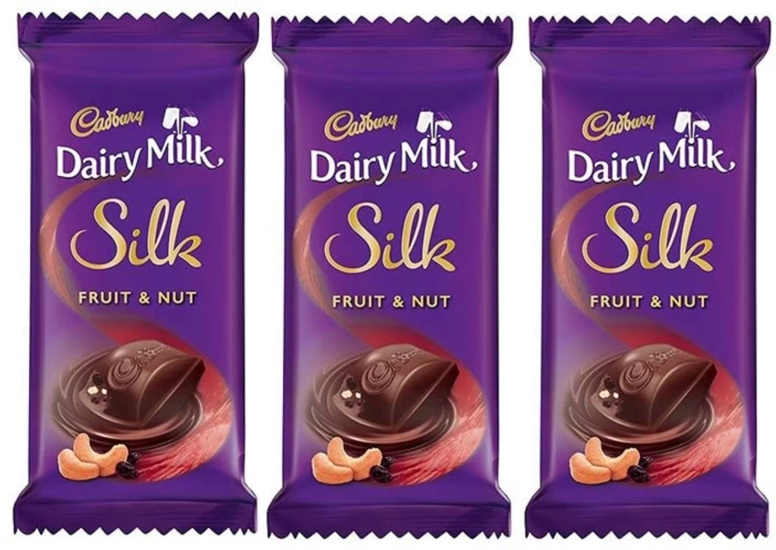
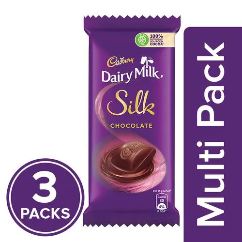
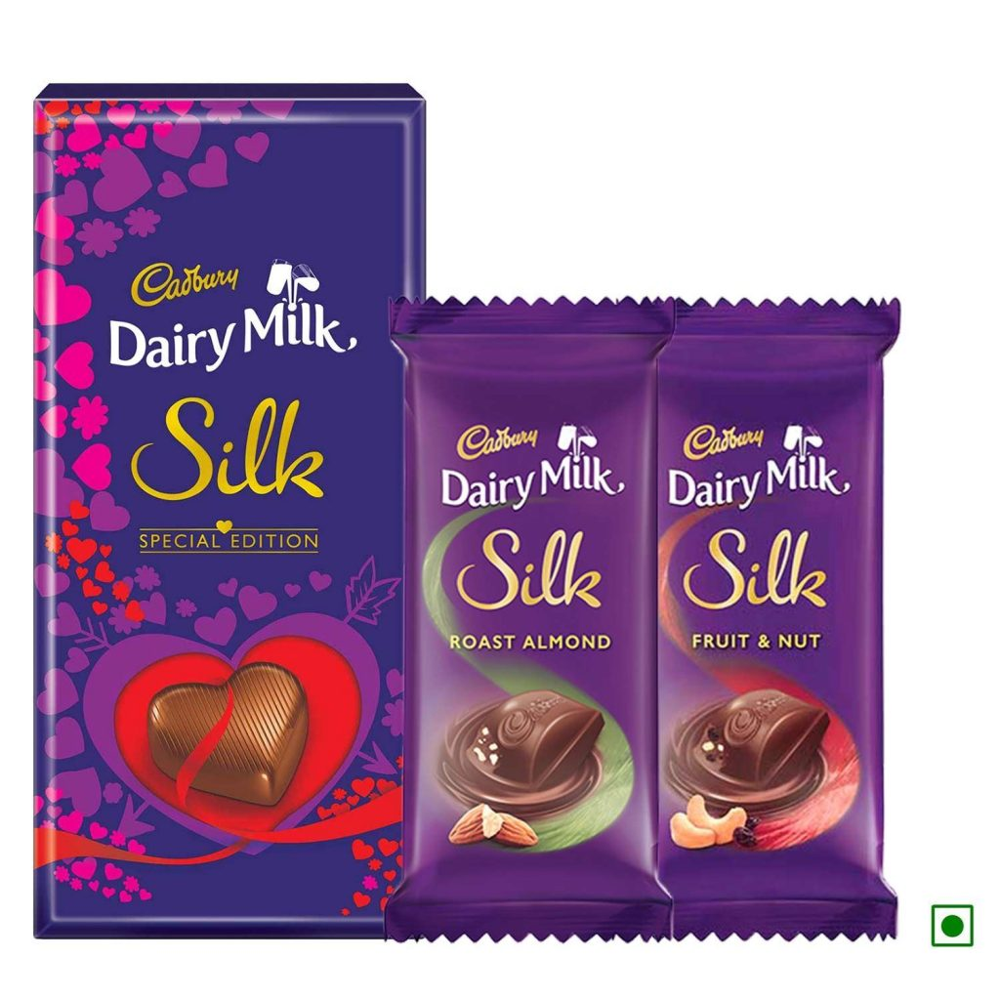
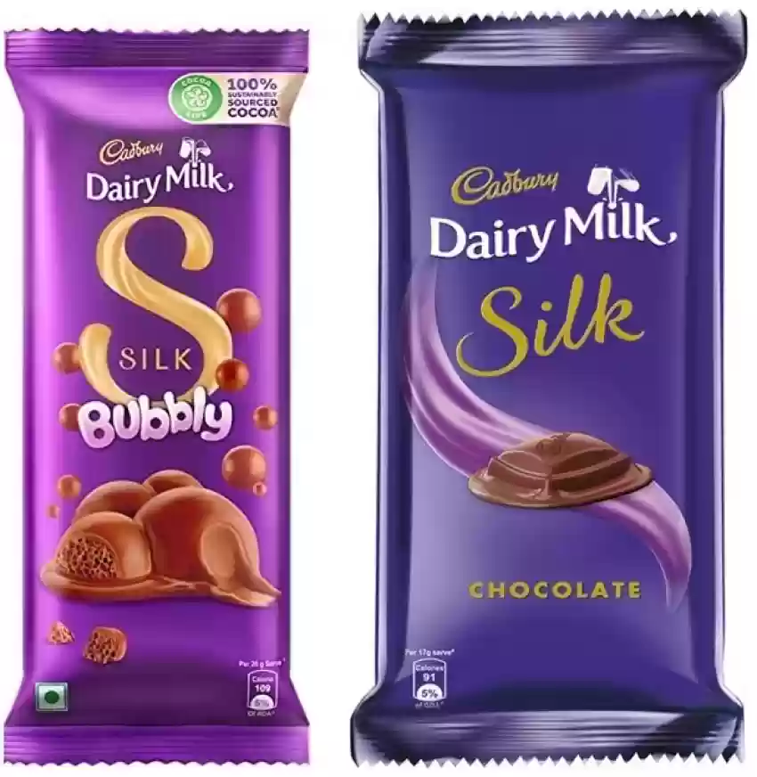
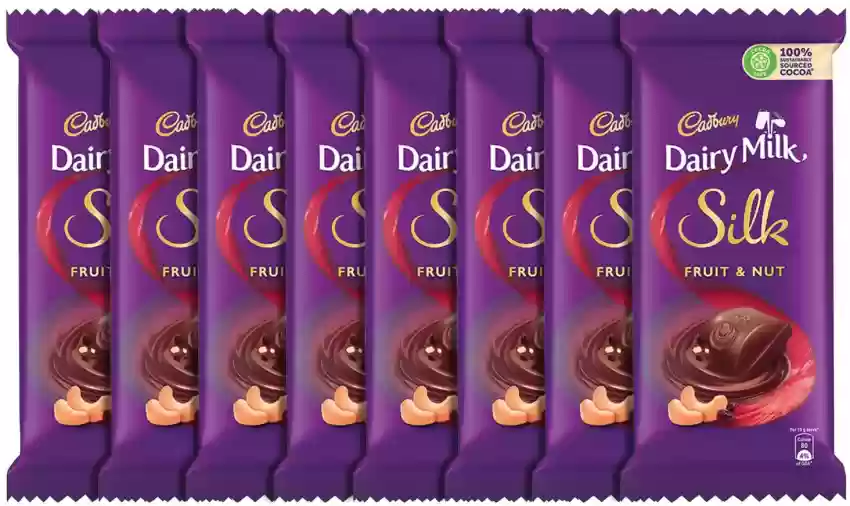
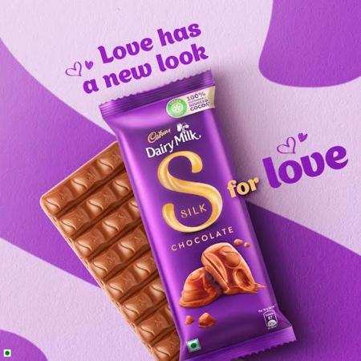
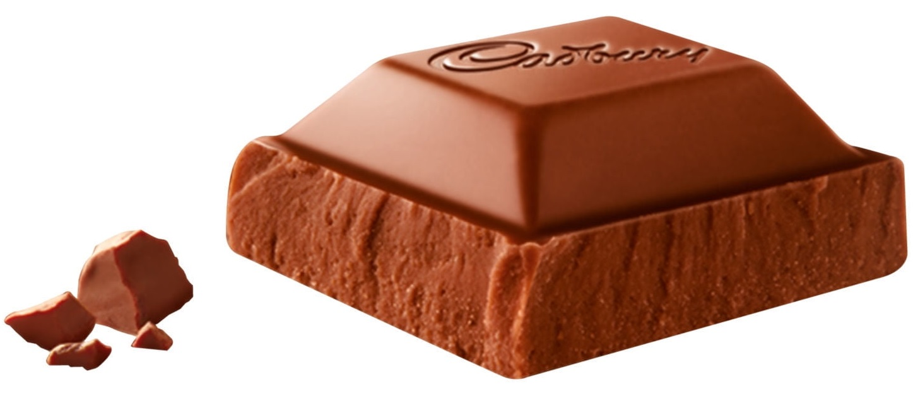
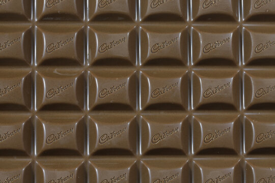

About Cadbury Dairy Milk
Cadbury Dairy Milk is chocolate admired by millions of people all around the world. Chocolate is manufactured under the Cadbury brand. Chocolate has been ranked as the leading chocolate bar in the UK since 2014 and has kept its position since then. This sweet and creamy milk chocolate taste with a hint of crunchiness will eventually make everybody crave it. We have to thank George Cadbury Junior for creating this iconic treat.
Everything started when John Cadbury started to sell tea and drink chocolate in 1824. Soon after, in 1831, he managed to start the production of cocoa and even opened a factory in Bridge Street, England. In 1847, John and his brothers partnered and started a company that we all know and love today, company was originally called “Cadbury Brothers.”
After the death of John Cadbury, his two sons continued to run the business. However, things were not going well. The company started to lose money. Still, it managed to regain its height, and by the year 1866, the company’s production shifted. Eventually, the brothers managed to start chocolate production and introduce higher-quality cocoa. The candy bar became one of the most famous treats of 1914.
The first major invention of the Cadbury brothers was the Dairy Milk Bar. George Cadbury Junior was the developer of this chocolate candy. The innovation in this product was that the proportions of milk used were much higher than in any other chocolate.
Cadbury Dairy Milk Chocolate first appeared in 1905 and was introduced in the United Kingdom. Dairy Milk consisted of several products made with milk chocolate. The brand is manufactured by Hershey’s company in the United States and has the license of manufacture from Cadbury. Chocolate candies are available worldwide, including in China, India, Sri Lanka, Pakistan, Bangladesh, and Kazakhstan.
The Cadbury brand of chocolate is one of the most loved and cherished in India. There, it was first introduced in 1948. However, it did not become popular right away. Cadbury Dairy Milk’s popularity era started in the 1990s with the popular campaign. The advertisement depicts a girl dancing in the field while holding a Cadbury chocolate bar. Since its appearance, the people of India have fallen in love with this treat, which remains to be one of the most popular treats.
Ingredients & Nutritional Information
Cadbury Dairy Milk Ingridients
- Milk
- Sugar
- Cocoa butter
- Cocoa mass
- Vegetable fats (palm, shea)
- Emulsifiers (E442, E476)
- Flavourings
Cadbury Dairy Milk Nutrition
Cadbury Dairy Milk Imagery
       